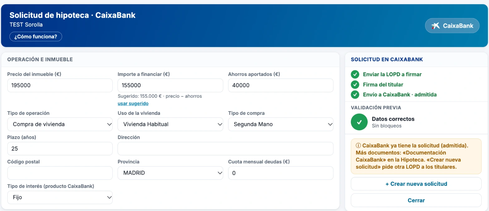
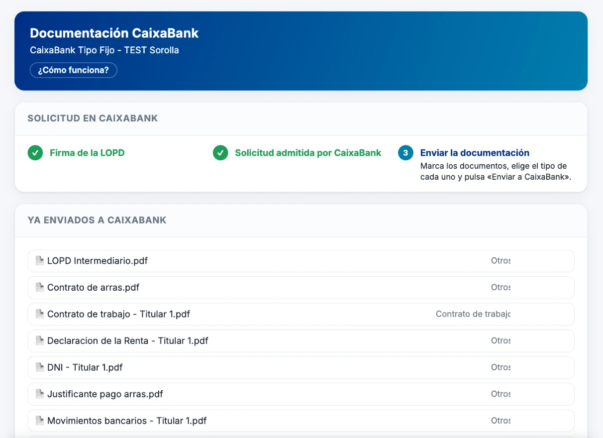
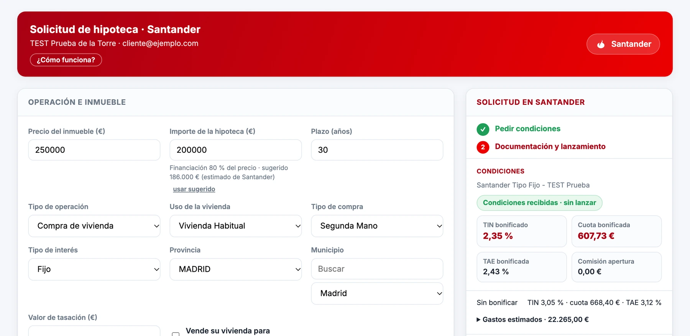
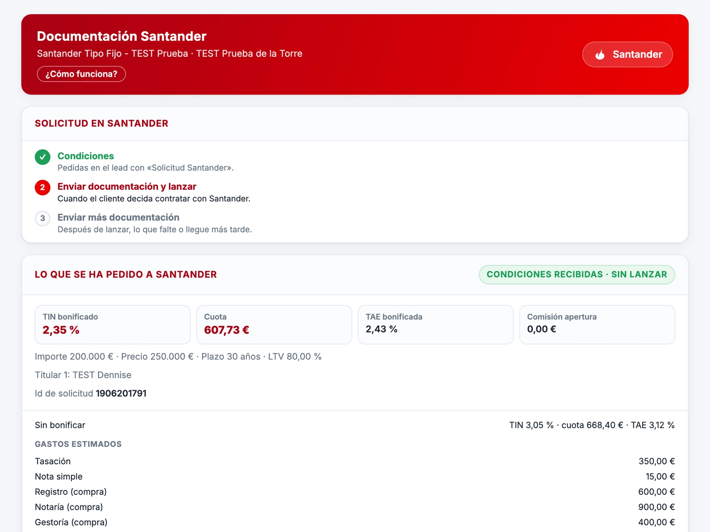

Project 4 · Bank integrationAll projects
A client's request reaches the bank in one click, and the reply comes back straight away. Before, everything went by email.
I connected the company's system with the bank's. The account manager checks the details, clicks send and the bank receives the request with its documents. The bank's reply appears in the same record.
The client record
- Request
- Financing application
- ID document
- 12345678Z
- Attachments
- 3 documents
- Reference
- No. 000123
- Reply
- Accepted for review
Before sending
Details complete
Valid ID document
Documents attached
Request and documents
Reply
The bank's system
- Request
- Financing application
- ID document
- 12345678Z
- Attachments
- 3 documents
- Status
- ReceivedAccepted for review
The reply comes back to the record, explained in plain words.
The real tool








What changes
Before, the account manager did everything by email: writing to the bank, attaching documents one by one and waiting for a reply, sometimes for days. Now they send the request from the client record and see the reply right there.
- It warns before sending if a detail is missing or something does not meet the bank's requirements.
- It explains the bank's reply in plain words.
- If the bank rejects it, it is corrected and resent without asking the client to sign again.
What I did
- I studied the bank's technical documentation and built the connection between its system and the company's.
- I designed the screens the team uses: send, see which documents are missing, check the status and recover a rejected request.
- I built a simulator to test each change without sending anything for real.
- I wrote the guide for the team and set up the yearly renewal of the access.
ResultsThe whole sales team uses it every day.
Built withCloudflare Workers · JavaScript · Zoho CRM · Zoho Sign